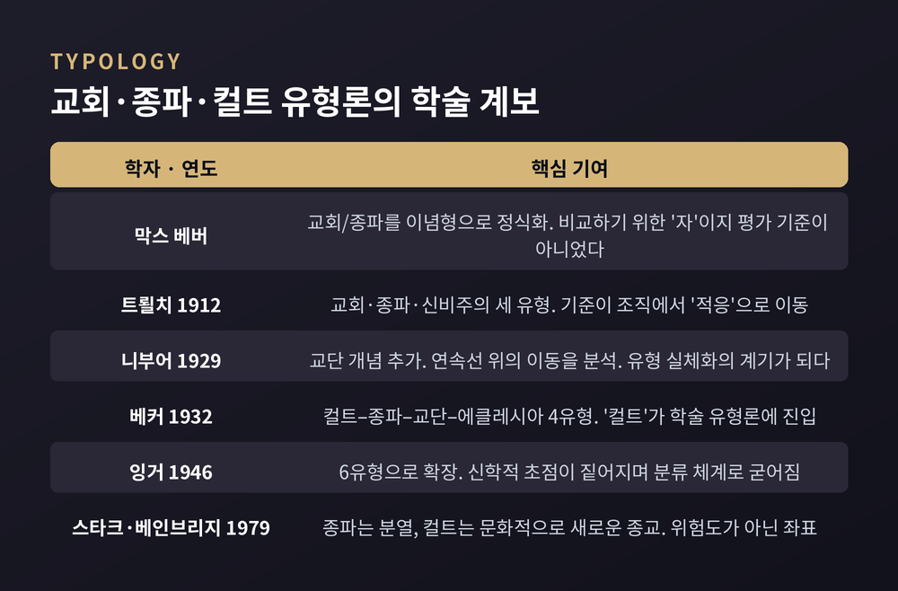
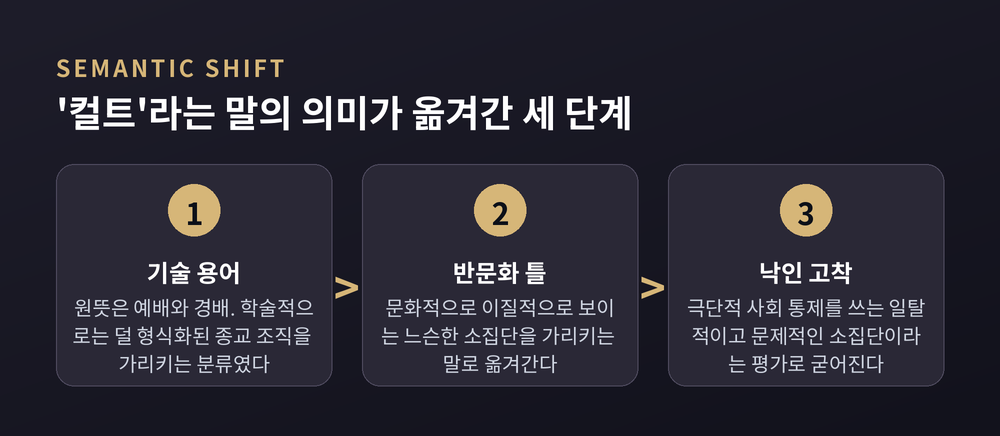

교회·종파·컬트 유형론부터 세뇌 논쟁까지, 비교종교학의 언어 정리
이번 글에서는 종교학이 '컬트'라는 단어를 왜 학술어에서 밀어냈는지, 그 자리에 무엇을 놓았는지 정리해 보겠습니다. 특정 단체를 평가하거나 어느 신앙이 옳은지 따지는 글이 아닙니다. 학문이 자기 도구를 점검한 과정, 그 자체를 따라가는 글입니다.
먼저 세 줄로 요약하겠습니다.
세 줄 요약
시작은 막스 베버입니다.
'교회(church)'와 '종파(sect)'라는 말 자체는 교회사가들이 오래 써 온 어휘입니다. 다만 이것을 사회학 개념으로 처음 붙인 공은 베버에게 돌아갑니다.
여기서 놓치면 안 되는 것이 그의 방법론입니다. 베버의 도구는 이념형(ideal-type)이었습니다. 연구자가 관련 경험 요소를 모아 명시적으로 구성한 정신적 구성물입니다.
하트포드 종교연구소의 『종교와 사회 백과사전』은 이것을 아주 선명한 비유로 설명합니다. 이념형은 길이를 재는 '인치'와 같다는 것입니다. 즉 교회와 종파라는 개념은 둘 이상의 종교 조직을 서로 비교하기 위한 자이지, 조직을 거기에 맞춰 평가하는 기준이 아니었습니다.
베버가 둘을 가른 기준도 담백합니다. 통상적인 성원 충원 방식이 출생이면 교회, 결단이면 종파. 그뿐이었습니다.
에른스트 트뢸치가 1912년 『기독교 교회의 사회적 가르침』에서 세 유형을 제시하면서 초점이 조금 옮겨갑니다. 교회, 종파, 그리고 신비주의입니다. 트뢸치는 사회학자가 아니라 신학자였고, 구분의 기준을 '적응' 또는 '타협'에 두었습니다.
여기서 미묘한 변화가 생깁니다. '성원 충원 방식'은 비교적 직접 확인할 수 있습니다. 그러나 '무엇이 적응인가'는 보는 위치에 따라 달라집니다. 조직에 대한 질문이 서서히 신학적 질문으로 바뀐 셈입니다.
번역 시차도 한몫했습니다. 트뢸치의 책은 1931년에 영역됐지만, 베버의 방법론 저작은 1949년에야 영어로 나왔습니다. 영어권은 '이념형'이라는 설명서 없이 도구만 먼저 받아 든 것입니다.

1929년, H. 리처드 니부어가 『교단주의의 사회적 원천』을 냅니다.
그의 관찰은 예리했습니다. 트뢸치가 '종파'라 부른 집단들이 시간이 지나면 형식을 갖추고 교회를 닮아간다는 것입니다. 그 중간 지대에 붙인 이름이 교단(denomination)입니다.
니부어의 진짜 기여는 다른 데 있습니다. 그는 교회와 종파를 별개의 상자가 아니라 하나의 연속선 양극으로 썼습니다. 분류에서 그치지 않고, 집단이 그 선 위를 이동하는 과정을 분석했습니다.
다만 부작용이 따라왔습니다. 하트포드 항목은 니부어의 작업만 떼어 놓고 보면 유형과 연속선이 실체화되는 경향이 있었다고 지적합니다. 도구가 실재처럼 취급되기 시작한 것입니다. 유형론이 사회학의 틀을 벗어나 '평가 장치'로 변질될 씨앗이 여기서 생겼습니다.
1932년 하워드 베커가 미국에서 이 이론을 이어받습니다. 그는 기존 두 유형을 각각 둘로 나눠 컬트–종파–교단–에클레시아의 네 유형을 만듭니다. '컬트'가 학술 유형론에 정식으로 들어온 순간이 여기입니다.
동시에 방법론적 후퇴도 일어납니다. 베커는 이념형 방법을 버리고 '추상적 집합체'라는 방법을 택했습니다. 유형이 구성물이 아니라 이념적 실재로 다뤄지기 시작했다는 뜻입니다.
1946년 J. 밀턴 잉거는 이를 여섯으로 늘립니다. 컬트, 종파, 확립된 종파, 계급교회/교단, 에클레시아, 보편교회. 마지막 항목의 이름만 봐도 이 용법이 얼마나 신학 쪽으로 기울었는지 보입니다.
하트포드 항목의 총평은 한 문장으로 압축됩니다. 교회-종파 이론은 이 과정에서 "비교분석의 도구에서, 종교 조직에 사회학 용어를 붙이는 분류 체계로" 초점이 옮겨갔다는 것입니다.
예전엔 비교하기 위한 자였습니다. 지금은 등급을 매기는 목록처럼 읽힙니다. 이 미끄러짐이 뒤에 벌어질 모든 일의 배경입니다.
이 계보의 가장 영향력 있는 마지막 진술은 로드니 스타크와 윌리엄 심스 베인브리지에게서 나옵니다. 1979년 『종교의 과학적 연구 저널』 논문과 1985년 저서 『종교의 미래』입니다.
두 사람의 구분은 의외로 단순합니다.
종파는 기존 종교 조직에서 떨어져 나온 집단입니다. 모체 전통이 있습니다. 컬트는 그 사회에 기존 전통이 없는 새로운 종교 문화입니다. 밖에서 수입되었거나 새로 만들어졌습니다.
즉 이들이 쓴 '컬트'는 위험한 정도를 재는 말이 아니었습니다. 문화적 새로움의 위치를 표시하는 좌표였습니다.
두 사람은 조직화 정도에 따라 이를 다시 셋으로 나눴습니다.
첫째, 청중 컬트입니다. 가장 느슨합니다. 참여자는 수동적 소비자에 가깝고, 서로 알지도 못하며 대규모 집회도 없습니다.
둘째, 고객 컬트입니다. 지도자나 지도 집단이 강좌나 의례 같은 서비스를 정기적으로 제공하고, 참여자는 치료사와 내담자에 가까운 지속적 관계를 맺습니다.
셋째, 컬트 운동입니다. 지도자와 고객의 일시적 관계보다 영구적 조직이 더 중요해진 형태입니다. 성원 요건, 조직 위계, 폭넓은 이념, 장기적 성장 지향을 갖춥니다. 스타크와 베인브리지는 드물게 이런 운동이 새로운 종교 전통 자체로 전환될 잠재력을 갖는다고 보았습니다.
덧붙일 것이 있습니다. 학계 안에서도 이견이 있었습니다. 스와토스는 1981년, 베버적 관점에서 보면 '컬트'는 교회-종파 축이 아니라 신비주의-금욕주의 축에 속하므로 애초에 이 유형론에 넣지 말았어야 한다고 주장했습니다.
이제 단어 자체로 가 보겠습니다.
라틴어 cultus는 최소 17세기부터 신에 대한 숭배, 경배, 헌신 실천, 예배를 뜻했습니다. 옥스퍼드 영어사전 항목 대부분이 이 '예배'를 일차적이고 역사적인 의미로 제시합니다.
특정 신을 유지하는 데 필요한 '경작(cultivation)'이 곧 그 신의 cultus였습니다. 신전과 성소에 마땅히 돌려야 할 돌봄이라는 뜻입니다.
지금도 흔적이 남아 있습니다. 학술 데이터베이스 주제어에는 'cultus, Israeli', 'cultus, Hittite', 'cultus, Egyptian' 같은 항목이 그대로 있습니다. 미국 의회도서관 주제명표에는 'Pharaohs — cultus'가 'Pharaohs — Religious Aspects'의 이형으로 등록돼 있습니다.
미르체아 엘리아데가 편집한 16권짜리 『종교 백과사전』(1987)에서도 '컬트' 다음 항목은 '성인 숭배(Cult of Saints)'입니다. 기독교 성인과 순교자에 대한 합당한 공동 경배를 다룹니다.
그렇다면 어디서 뒤집혔을까요.
제임스 T. 리처드슨이 1993년 논문에서 이 의미 변화를 세 단계로 추적했습니다.
처음에는 기술적 용법이었습니다. 종교 조직의 제도화 수준을 나타내는 분류에서, 주관성과 신비주의와 카리스마적 권위에 관심을 두는 덜 형식화된 조직을 가리켰습니다.
다음은 이동입니다. 문화적으로 이질적으로 보이는 느슨한 소집단을 가리키는 말로 옮겨갑니다. 반문화라는 틀이 여기 작동합니다.
마지막이 고착입니다. 극단적 사회 통제 수단을 쓰는 일탈적이고 문제적인 소집단이라는 부정적 평가가 굳어집니다.
이 변화는 생각보다 이릅니다. 1875년 영국의 한 신문 기사는 이미 어떤 단체를 두고 "비밀 공동체이며, 그 성원들은 기이하고 섬뜩한 서약으로 결속되어 있다"고 썼습니다.
반대로 350년 전에 이미 경계의 목소리도 있었습니다. 1679년 윌리엄 펜은 이렇게 적었습니다. "모든 부수적 차이나 예배의 다양성을 새 종교라고 별명 붙이지 말라."

낙인이 굳는 데에는 사회적 조건이 있었습니다.
미국에서는 두 가지가 겹쳤습니다. 1965년 아시아인 이민 제한 관련 규제가 철폐되며 종교 지형이 크게 바뀌었고, 1960년대 반문화가 새로운 종교에 우호적인 환경을 만들었습니다. 그리고 세뇌당해 억류돼 있다고 여겨진 젊은이들을 '구출'하겠다는 반컬트 운동이 등장했습니다.
1978년 11월 존스타운 집단 사망 사건은 그 불안이 이미 크게 고조된 시점에 일어났습니다. 이후 이 지명은 "일련의 부정적 이미지와 감정을 불러일으키는 암호어"가 되었고, 반컬트 수사는 모든 새로운 종교를 이 하나의 틀 안에 밀어 넣었습니다.
다만 관련 연구 자료들은 한 가지를 분명히 합니다. 이 인식 변화는 단일 참사의 결과가 아니라, 수십 년에 걸친 정치적·문화적 맥락 변화가 쌓인 결과였다는 점입니다.
학계의 대응은 1970년대 초에 시작됩니다.
여러 신종교를 연구하던 학자들이 적어도 공적 담론에서는 'cult'와 'sect' 사용을 그만두기로 합니다. 이미 널리 퍼진 부정적 함의를 피하기 위해서였습니다. 그 자리에 놓은 것이 신종교운동(new religious movement, NRM)입니다.
아일린 바커의 설명이 이 선택의 성격을 잘 보여줍니다. 그 운동들이 "사회 문제인지 아닌지를 미리 판단하지 않는(without prejudging) 총칭 라벨"이 되기를 바랐다는 것입니다. 1970년대 말에는 학계에서 이 전환이 대체로 완료됩니다.
이유는 세 갈래로 정리됩니다.
첫째, 예단의 문제입니다. 리처드슨의 표현으로 '컬트'는 새롭고 이질적인 종교 집단을 향한 사회적 무기로 쓰였습니다. 학자가 그 말을 계속 쓰면 그 무기를 휘두르는 쪽의 의제를 도와주게 됩니다.
둘째, 전제가 연구를 막는다는 점입니다. 바커는 대중적 이해 대부분이 "그 운동들이 사회 문제라는 가정에서 출발한다"고 짚습니다. 자기 도덕적 우려를 그 집단에 관한 사실로 삼는 순간, 그 운동을 '문제' 이외의 무엇으로도 이해할 길이 닫힙니다.
셋째, 식민주의적 위계의 잔재입니다. 울리히 베르너는 NRM 개념이 아프리카학에서 발전해 나왔다고 봅니다. 문제는 유럽식 형태를 닮은 것은 '종교'로 인정받고, 아프리카 및 아프리카 디아스포라의 종교는 더 단순한 '컬트'로 격하되는 경향이 있었다는 데 있습니다. 그 결과 도서 분류에서 칸돔블레가 '아프로-브라질 컬트'의 하위 항목으로 들어가는 왜곡이 남았습니다.
한계도 함께 적겠습니다. 학계는 대중 어휘에서 이 단어를 밀어내는 데 실패했습니다. 수십 년간 중립 용어를 쓰고 언론에도 권해 왔지만, 'cult'는 여전히 대중 용법에 끈질기게 남아 있습니다. '파괴적이지 않은 컬트' 같은 완화 표현으로도 낙인은 해소되지 않았습니다.
1970~80년대 반컬트 담론의 핵심 주장은 하나였습니다. 신종교 가입은 자발적 선택이 아니라 세뇌의 결과라는 것입니다.
이 주장은 결국 미국심리학회(APA)의 검토 대상이 됩니다. 1983년 마거릿 싱어를 위원장으로 하는 태스크포스(DIMPAC)가 구성됐습니다. 과제는 신종교운동 충원 과정에 세뇌 또는 '강압적 설득'이 작동하는지 조사하는 것이었습니다.
결과는 알려진 대로입니다. APA는 세뇌 이론이 과학적으로 입증되지 않았다고 규정했습니다. 1987년에는 신종교운동에 적용된 세뇌·강압적 설득 이론이 과학적이지 않다는 입장을 다시 밝혔습니다.
경험 연구 쪽의 반증은 더 직접적이었습니다. 핵심은 이탈률입니다.
가장 자주 인용되는 자료는 아일린 바커가 1984년에 낸 『무니 만들기: 선택인가 세뇌인가』입니다. 당시 "가장 효과적인 세뇌 수단"으로 지목되던 2일 수련회를 대상으로 한 연구였습니다.
수치는 이랬습니다. 참가자 가운데 1주일 넘게 머문 사람은 25% 미만이었습니다. 1년 뒤까지 전임 성원으로 남은 사람은 5%였습니다. 한 번이라도 그 센터를 방문한 전체 인원 기준으로는, 2년 뒤까지 남은 사람이 200명 중 1명에도 미치지 못했습니다.
바커의 현장 관찰도 함께 기록해 둘 만합니다. 그는 납치나 감금, 강제의 증거를 찾지 못했습니다. 수면 박탈도 없었고, 강연은 트랜스를 유도하는 성격이 아니었으며, 약물이나 알코올도 없었습니다.
논리적 반박은 간명합니다. 세뇌 이론은 모임에 참석하고도 가입하지 않은 다수를 설명하지 못합니다. 그리고 스스로 걸어 나간 사람들도 설명하지 못합니다.
다만 이 논쟁이 완전히 끝난 것은 아닙니다. 양쪽을 모두 적어 두겠습니다.
비판 측은 세뇌 담론이 신종교를 평가절하하고 불신하게 만들려는 이들의 이해에 봉사할 뿐이라고 봅니다. 반대 측은 강압적 설득과 심리적 조작이라는 문제의식 자체가 사라진 것은 아니며, 실제 피해 사례를 기술할 언어가 여전히 필요하다고 주장합니다. 최근까지도 연구자들 사이에 이 논쟁이 이어지고 있습니다.
한 가지는 분명히 해야 합니다. "세뇌라는 설명 모형이 과학적 근거를 갖추지 못했다"는 판단과 "피해가 없다"는 판정은 전혀 다른 말입니다. 앞의 것이 학계가 내린 결론이고, 뒤의 것은 아무도 내리지 않은 결론입니다.
신종교운동은 아무 때나 생기지 않습니다. 연구자들이 공통으로 꼽는 조건이 있습니다.
근대화와 후기근대의 변동입니다. 미국과 일본은 새로운 종교가 특히 많이 생겨난 토양으로 꼽힙니다. 노동과 가족, 기술과 가치, 인구 이동에 걸친 변화를 마주하면서 나타난 현상이라는 설명입니다.
식민 지배와 억압적 맥락입니다. 침입한 세력이 원주민의 토지와 부를 빼앗고 전통적 삶의 방식을 파괴한 상황은, 신종교운동이 자라기에 무르익은 조건으로 지목됩니다.
이민입니다. 이주민이 자기 종교를 새로운 문화적 맥락 안으로 옮겨오는 경로입니다.
H. W. 터너는 1971년에 이 현상군의 공통 특징 넷을 정리했습니다. 같은 역사적 시기에 나타났다는 점, 한쪽이 다른 쪽을 지배하는 접촉 상황에서 발생했다는 점, 반응이 압도적으로 종교적 형태를 띠었다는 점, 그리고 그 종교현상학적 특징이 다섯 대륙에서 놀랍도록 유사했다는 점입니다.
유형 분류로는 로이 월리스가 1984년에 제시한 셋이 널리 쓰입니다. 기준은 세계에 대한 태도입니다.
세계 거부형은 주류 사회가 표방하는 것 대부분을 거부합니다. 이념이 주류 사회에 매우 비판적이고, 성원에게 높은 헌신을 요구하는 경향이 있습니다.
세계 긍정형은 반대입니다. 개인의 영적 잠재력을 끌어내 주류 사회 안에서 성공하도록 돕는 데 초점을 둡니다. 극도로 개인주의적이고, 성원의 삶을 통제하려는 시도가 적으며, 성원 교체율이 상당히 높습니다.
세계 적응형은 세계를 거부하지도 긍정하지도 않고 수용합니다. 대개 기존 교회나 종교 조직에서 갈라져 나온 형태입니다.
규모 이야기를 빼놓을 수 없습니다. 여기서 대중 이미지와 실제가 크게 어긋납니다.
유럽 기준 추정으로, 신종교운동의 수는 2천 개를 넘을 가능성이 높습니다. 그런데 대부분은 성원이 매우 적습니다. 때로는 20명이 안 되는 경우도 있고, 한 나라에서 특정 시점에 1천 명을 넘는 경우는 극소수입니다.
통계를 내기 어려운 이유도 함께 제시됩니다. 정의가 제각각이고, 많은 운동이 자기 존재를 알리지 않으며, 일부는 성원 수를 공개하지 않고, 집단마다 '성원'의 기준이 다릅니다.
거대하고 위협적인 조직이라는 이미지와 실제 규모 분포 사이의 간극. 이것이 이 분야에서 가장 자주 확인되는 사실 가운데 하나입니다.
여기서 이 분야의 가장 까다로운 문제가 나옵니다. 증언의 문제입니다.
데이비드 브롬리는 집단을 떠난 사람들을 떠난 조건에 따라 셋으로 나눴습니다. 이탈자(defector), 내부 고발자(whistle-blower), 배교자(apostate)입니다. 그는 배교자 서사가 "그 운동의 진짜 성격을 몰랐던 무고한 사람이 전복적 기법에 설득당했다"는 형태로 정형화되는 경향을 지적했습니다.
브라이언 윌슨은 1994년에 더 나아갑니다. 이탈자 증언 유포의 동기 가운데 금전적 이익을 지목했고, "객관적인 사회학 연구자도, 법정도 배교자를 신뢰할 만한 증거 출처로 쉽게 간주할 수 없다"고 썼습니다.
그런데 이 글에는 반드시 따라붙어야 할 사실이 있습니다. 이 1994년 글은 특정 교단을 위해 작성된 것으로 알려져 있습니다. 즉 이 주장 자체가 이해관계에서 자유롭지 않다는 비판을 받습니다.
반대 방향의 실증 연구도 있습니다. 필립 찰스 루카스는 한 소규모 종교 조직의 이탈자들을 인터뷰해 잔류자·외부 관찰자와 비교했습니다. 결론은 이탈자 증언이 잔류자 증언과 같은 정도로 (불)신뢰할 만하다는 것이었습니다. 배교자 증언만 유독 못 믿을 것이라는 가정을 정면으로 반박한 셈입니다.
대중 담론과 학술 담론 사이의 간극도 이 지점에서 가장 큽니다. 이탈자 회고록은 대중적으로 풍부한 내부자 지식의 원천으로 높이 평가됩니다. 반면 연구자들은 그 서사의 형성 조건을 함께 따집니다.
실무적 결론은 오히려 단순합니다. 어느 한쪽 증언만으로는 그림이 완성되지 않습니다. 내부자 증언은 자기 정당화의 압력을 받고, 이탈자 증언은 자기 서사 재구성의 압력을 받습니다. 양쪽을 교차 검토하고 각 증언이 놓인 조건을 함께 밝히는 것이 표준으로 자리 잡았습니다.
이 원칙을 제도로 만든 곳이 두 군데 있습니다.
INFORM은 1988년 아일린 바커가 영국 정부와 주류 교회들의 지원을 받아 세운 자선단체입니다. 목적은 소수 종교에 관해 가능한 한 신뢰할 수 있는 정보를 제공하는 것입니다. 바커는 런던정경대 사회학 교수이며, 2000년 이 활동으로 대영제국훈장을 받았습니다.
CESNUR도 같은 1988년에 설립됐습니다. 본부는 이탈리아 토리노에 있습니다. 내건 목적은 새로운 종교 의식 분야의 학술 연구를 촉진하는 동시에, 일부 운동과 관련된 문제를 드러내고 종교 자유의 원칙을 옹호하는 것입니다.
여기서도 한계를 인정하는 편이 정직합니다. CESNUR는 종교 자유 옹호 성향이 강하다는 비판을 받기도 합니다. 어떤 기관의 자료든 그 기관이 서 있는 위치를 함께 밝히고 읽어야 합니다.
용어를 바꾸는 일은 취향의 문제가 아닙니다. 실제 결과가 따라옵니다.
법정에서 '컬트'라는 표현이 허용되는 순간, 편견이 암묵적으로 승인되는 자리가 생깁니다. 혼인법과 중혼 혐의, 소수 종교 신자의 양육권과 면접교섭, 시민권과 망명 신청까지 실제 소송이 존재합니다. 어떤 사람의 종교적 소수자 지위나 '컬트' 지정 여부는 그의 시민권과 망명 신청에 큰 영향을 미칩니다.
동시에 반대편 사실도 그대로 존재합니다. 성적·심리적·정서적 학대, 약탈적 관계 같은 실제 형사 사건도 함께 있습니다. 이것을 지우고 논의할 수는 없습니다.
프랑스 사례가 이 긴장을 잘 보여줍니다.
프랑스에는 MIVILUDES라는 부처간 조직이 있고, 2001년 법은 인권과 기본적 자유를 침해하는 종파적 운동의 예방과 처벌을 강화하는 것을 목표로 합니다. 규제 측의 논리는 이렇습니다. "종교의 자유에 대한 공격이라는 허위 근거로 종파적 남용에 맞선 싸움을 포기하지 않을, 진짜이고 타당한 이유들이 있다."
비판 측의 지적도 구체적입니다. 연례 보고서의 서술이 익명 진정에 근거했고 객관적 조사가 거의 없었다는 문제 제기가 있었습니다. 해당 기관이 대상 신앙의 낙인화에 기여했다는 비판도 있습니다. 학술지 『Religions』에 실린 한 논문은 관련 보고서가 프랑스에서 교회와 국가의 경계를 다시 그었고, 신흥·소수 종교 집단의 종교 자유를 제한했다고 분석했습니다. 유럽평의회에서도 관련 논의가 이어졌습니다.
이 사안은 정리되지 않은 현재진행형입니다. 어느 쪽이 옳다고 판정할 위치에 저는 있지 않습니다.
다만 학계가 제시하는 방향은 비교적 일관됩니다. 총칭 라벨을 버리는 것과 개별 사건의 피해를 부인하는 것은 전혀 다른 일이라는 것입니다.
'컬트'를 내려놓아도 기술할 어휘는 충분히 남습니다. 학대의 여러 형태, 트라우마, 강압 기법, 성폭력, 재정 부정은 모두 각각의 정확한 이름을 갖고 있습니다. 동시에 공동체주의, 카리스마, 종교적 리더십, 사회적 주변성 같은 중립적 기술 어휘도 함께 갖춰져 있습니다.
집단 전체에 딱지를 붙이는 방식에서, 구체적 행위를 구체적으로 기술하는 방식으로. 이것이 종교의 자유와 피해 대응을 동시에 지키려는 시도입니다.
물론 이것으로 모든 문제가 풀리지는 않습니다. 어디까지가 신념의 자유이고 어디부터가 가해인지, 그 경계를 긋는 일은 여전히 논쟁 중입니다.
정리하면 이렇습니다.
종교학이 '컬트'를 내려놓은 것은 판단을 포기해서가 아닙니다. 판단을 시작하기 전에 대상을 먼저 보기 위해서였습니다. 이름표가 결론을 미리 써 버리면, 남는 것은 확인 절차뿐입니다.
베버의 이념형이 '비교하기 위한 자'였다는 사실로 돌아가 봅니다. 자는 재는 도구입니다. 재기도 전에 등급을 정해 주는 도구가 아닙니다.
"이름을 붙이는 일은 이미 판결하는 일이다."
한 세기를 돌아 학문이 배운 것은 결국 이 한 문장인지도 모르겠습니다. 그러니 낯선 신앙을 마주했을 때 무엇부터 하면 좋겠냐고 물으신다면, 저는 이름을 고르기 전에 잠시 멈추는 일부터 권하겠습니다.